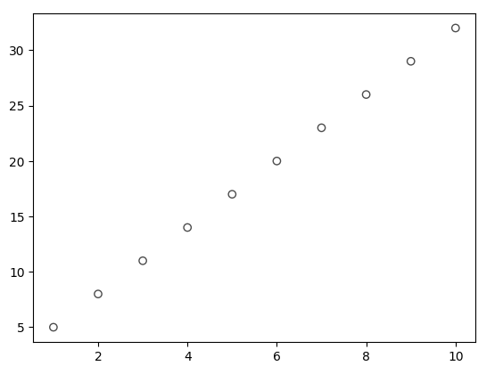
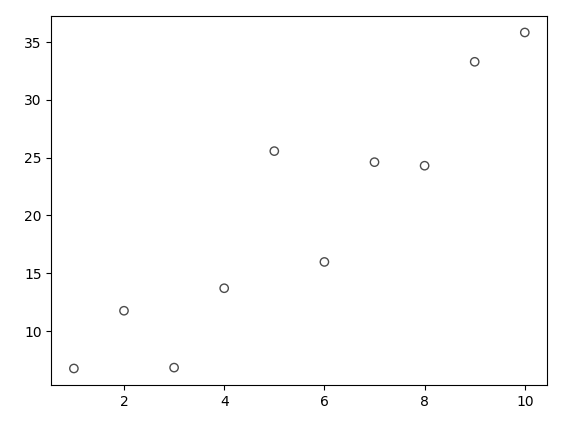
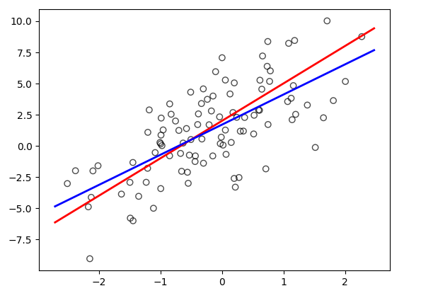
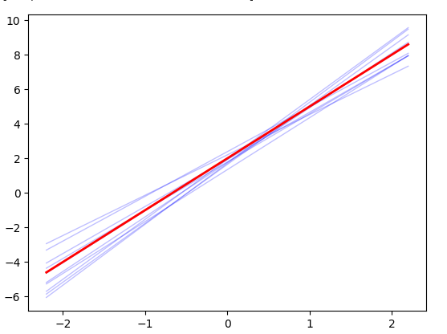

ISLP Notes: Linear Regression
Simple Linear Regression
It’s really convenient when all data falls on a straight line. For any input X, you get an exact output Y. Here’s a plot for Y = 2 + 3X
import numpy as np
import matplotlib.pyplot as plt
X = np.arange(1,11)
Y = 2 + 3 * X
plt.scatter(X,Y, color='gray', alpha=0.7, facecolors='none', edgecolors='black')

We are rarely so lucky. There is often some unaccountable variance we can’t explain. Here the variance is represented by the variable e
X = np.arange(1,11)
e = rng.normal(loc=0.0, scale=5.0, size=10)
Y = 2 + 3 * X + e
plt.scatter(X,Y, color='gray', alpha=0.7, facecolors='none', edgecolors='black')

Now 2 + 3X won’t be accurate. At X=2 we expect 8, but observe 11.75. In fact, no straight line can fit through this data. However, we can see from these observations that the data appears to trend upwards and to the right. There could be a straight line that gives a best estimate based on the existing data points. In fact, this is the essence of simple linear regression, finding the straight line that estimates better than any other for the data.
How do we find that line? How do we know, with absolute certainty, there isn’t some other line that makes better estimates? We noticed at X=2 that the observation was 11.75 when we expected 8. There is a residual difference of 11.75-8 = 3.75. In theory, a better fitting line would have a smaller value than 3.75. Now calculate this difference for each of your observations. Square them and them sum then. This is called the residual sum of squares(RSS) and best fit line is the one with the smallest RSS. This is something worth thinking about, if every point truly fell on the 2 + 3X, every output would match the every observation. The RSS would be zero and you’d know it was the best fit line!
The goal is to now find this line with the smallest RSS. A line consists of two parts, its slope and intercept. The intuition we can develop is that If we mapped every slope to the X axis, and every intercept to the Y axis, our Z axis would be the corresponding RSS. The smallest RSS would also be the lowest value on the Z axis. This creates a floor in 3d space, where the slope of the X and Y axis is zero. Taking the partial derivatives of RSS with respect to slope and intercept and solving for Zero gives us the exact X and Y coordinates to the smallest RSS.
$\hat{B_1} f= \frac{\sum_{i=1}^{n} (x_i - \bar{x})(y_i - \bar{y})}{\sum_{i=1}^{n} (x_i - \bar{x})^2}$
$\hat{B_0} = \bar{y} - \hat{B_1}\bar{x}$
For a deeper dive in how the authors arrived at these formulas see here.
in numpy, you can calculate these with Polynomial.fit
import numpy as np
from numpy.polynomial import Polynomial as P
X = rng.normal(loc=0.0, scales=1.0, size=100)
e = rng.normal(loc=0.0, scales=3.0, size=100)
Y = 2 + 3 * X + e
p = P.fit(X, Y, 1)
beta_0, beta_1 = p.convert().coef
Now we can draw Y = 2 + 3X (below in red) and compare it to our best fit line (in blue).
import matplotlib.pyplot as plt
plt.scatter(X,Y, color='gray', alpha=0.7, facecolors='none', edgecolors='black')
x_line = np.linspace(X.min() - 0.2, X.max() + 0.2, 100)
y_pop = 2 + 3 * x_line
plt.plot(x_line, y_pop, color='red', linewidth=2)
y_lsq = beta_0 + beta_1 * x_line
plt.plot(x_line, y_lsq, color='blue', linewidth=2)

Generating 10 lines from 10 different datasets using this method show’s they always tend to be close to the true relationship.
x_line = np.linspace(-2.2, 2.2, 10)
for i in range(10):
rng = np.random.default_rng()
X = rng.normal(loc=0.0, scale=1.0, size=100)
e = rng.normal(loc=0.0, scale=3.0, size=100)
Y = 2 + 3 * X + e
p = P.fit(X, Y, 1)
beta_0, beta_1 = p.convert().coef
y_lsq = beta_0 + beta_1 * x_line
plt.plot(x_line, y_lsq, color='blue', linewidth=1, alpha=0.25)
y_pop = 2 + 3 * x_line
plt.plot(x_line, y_pop, color='red', linewidth=2)

It also shows that fitting a line to sample data can overestimate or underestimate the true relationship. How do we know if our line is an accurate estimate? The authors introduce a few methods. Each of these topics is worth understanding further. The python statsmodels will calculate these for you.
- Standard Error. How much deviation can we expect from the slope and intercept if we were to try again with a completely new sample set?
- Confidence Interval. 2 Standard deviations of the standard error cover 95% of samples. The true relationship likely falls between $\hat{\beta_1} \pm 2 \times SE(\hat{\beta_1})$
- t-statistic. What if turns out there is no relationship between X and Y? That means the slope would be zero. The t-statistic tells you how many standard deviations the slope is away from zero. The t-statistic corresponds to a p-value. The p-value is a probability we would encounter a slope at least this steep if there was no relationship between X and Y.
- $R^2$. How much of the variance in Y is explained by X? an $R^2$ close to zero means X doesn’t explain anything. If every observation fell exactly on the line. $R^2$ would be a perfect 1.
import statsmodels.api as sm
import numpy as np
rng = np.random.default_rng()
X = rng.normal(loc=0.0, scale=1.0, size=100)
e = rng.normal(loc=0.0, scale=3.0, size=100)
Y = 2 + 3 * X + e
X_with_const = sm.add_constant(X)
model = sm.OLS(Y, X_with_const).fit()
print(model.summary())
Multiple Linear Regression
Simple Linear Regression had just one predictor Variable X for Y. Multiple Linear Regression extends this approach to multiple predictors. A prediction for Y takes the form
$\hat{y} = \hat{\beta_0} + \hat{\beta_1}x_1 + \hat{\beta_2}x_2 + \cdots + \hat{\beta_p}x_p$
The least squares approach is again used to find the best fit coefficents for the observations.
MLR uses one additional measurement, the f-statistic. This is similar to the t-statistic, but reviews the variation in Y with all predictors as a group. This has an advantage over running each predictor’s t-statistic, because a large number of predictors is suspectable to some t-values looking significant, but being the result of random chance.
With multiple predictors it would be nice to know if any of the predictors have no relationship and are worth leaving out. This is referred to as variable selection and is the topic of discussion for chapter 6. The authors introduce 3 approaches:
-
Forward Selection. only an intercept, no predictors. Perform p linear regressions. Add the variable that results in the lowest RSS. Repeat again with the new model.
-
Backward Selection. Start with all variables in the model. Remove the variable with the largest p-value (the least statistically significant). This process can be repeated until all p-values are under a certain threshold.
-
Mixed selection. A combination of starting the Forward Selection process and incorporating the Backward Selection process as large p-value variables are found.